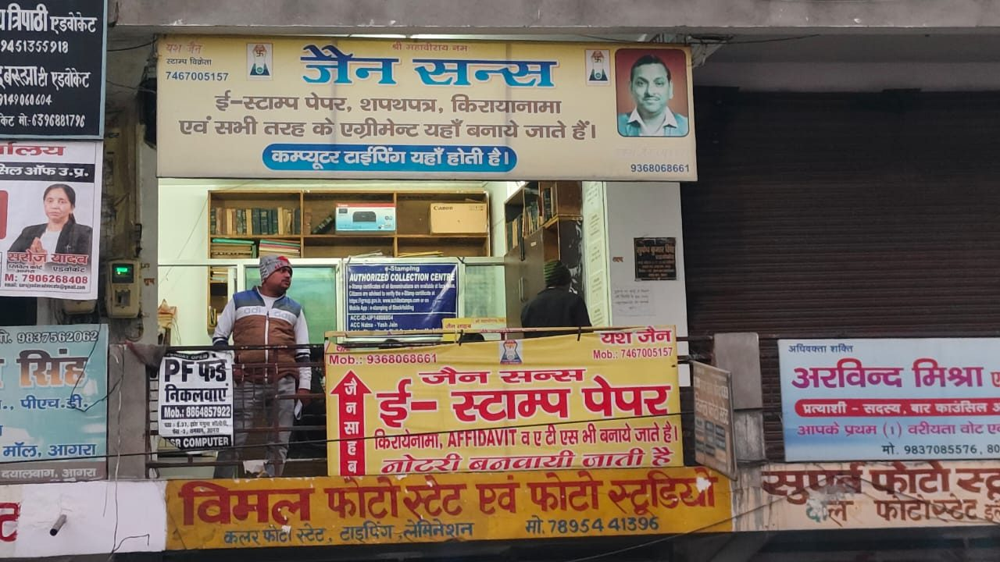

Tender Documentation in Agra: e-Tender Registration, DSC & Bid File Preparation
Jain & Sons helps contractors, suppliers and firms in Agra with new e-tender registration, DSC support and complete bid file preparation for Nagar Nigam, PWD, ADA, Jal Kal Vibhag and other department tenders. Open all 7 days at Diwani Crossing.
आगरा में टेंडर डॉक्यूमेंटेशन — नई ई-टेंडर रजिस्ट्रेशन, डीएससी (DSC) सहायता और बिड फाइल तैयार करना: नगर निगम, पीडब्ल्यूडी, ADA और जल कल विभाग के टेंडर के लिए।
- DSC support
- New e-tender registration
- Bid file preparation
- Open Monday to Sunday
Tender support in Agra for major departments
Every department publishes its own tender notice with its own document list. We prepare your file to match that notice.
Nagar Nigam tender in Agra
Tenders of Agra Nagar Nigam for roads, drains, sanitation, lighting, buildings and supply work: registration, DSC, documents and bid upload.
PWD tender in Agra
Public Works Department tenders for roads, bridges and buildings: contractor documents, experience and financial papers, EMD proof and affidavits.
ADA tender in Agra
Agra Development Authority tenders for development, housing and infrastructure work: complete technical and financial bid preparation.
Jal Kal Vibhag tender in Agra
Jal Kal Vibhag, Jal Sansthan and Jal Nigam tenders for water supply, pipeline and sewerage work: document checklist and online submission help.
Other department tenders
Irrigation, electricity, Cantonment Board, railways, Smart City, health, education and other government tenders, including central government portal and GeM tenders.
Tender documentation services in Agra
New tender registration
New e-tender portal registration, form filling, document upload and DSC mapping for first-time bidders.
DSC support
Class 3 Digital Signature Certificate application, token installation, signing tests and renewal help.
Bid file preparation
Technical and financial bid preparation, document arrangement, scanning and PDF formatting as per the tender notice.
Affidavits and undertakings
Tender affidavits and undertakings on stamp paper or e-stamp with notary assistance.
Online bid upload
Help uploading, encrypting and submitting your bid on the portal before the last date.
Tender alerts and follow-up
Help finding relevant tenders, tracking corrigenda and dates, and keeping your registrations and DSC valid.
Contractor and firm documents
Help organising registration, PAN, GST, ITR, balance sheet, experience and work completion documents, plus partnership or company papers.
GeM and post-award papers
Guidance on GeM registration, agreements and other paperwork after a tender is awarded.
DSC for tender in Agra
A Digital Signature Certificate (DSC) is needed to log in to tender portals, sign and encrypt your bid. Most tenders ask for a Class 3 DSC with signing and encryption. We help you apply through a licensed Certifying Authority, install the USB token and driver, test signing on the portal and renew before it expires.
New e-tender registration in Agra
- Get your DSC readyApply for or renew your Class 3 DSC and install the token.
- Collect documentsPAN, GST, ID and address proof, firm or company papers and bank details.
- Register on the portalWe help fill the registration form on the relevant e-tender portal, such as the UP e-tender portal, and map your DSC.
- Wait for approval and log inAfter the portal approves your registration, we help you test your login and start searching tenders.
Bid file preparation and documents for tender
Missing or wrongly formatted documents are a common reason for a bid being rejected. We read the tender notice, make a checklist and prepare your file to match it.
Technical bid usually includes
- Registration or enlistment certificate
- PAN, GST and ITR
- Experience and work completion certificates
- Balance sheet or CA certificate
- EMD and tender fee proof
- Affidavits, undertakings and power of attorney
Financial bid usually includes
- BOQ filled in the specified format
- Rates and percentage as asked
- Correct file type and file size
- Encrypted and signed upload
Tender support process
- Share the tenderSend the tender notice or ID and last date on WhatsApp or by call.
- Checklist and gap reviewWe list the required documents and tell you what is missing.
- Prepare the bid fileWe arrange, scan and format documents and prepare affidavits.
- Submit before the deadlineWe help with encrypted upload and final submission. Online help is available for eligible cases, and some steps may need a visit.
आगरा में टेंडर सेवाएँ
जैन एंड सन्स आगरा में ठेकेदारों और फर्मों के लिए नगर निगम टेंडर, पीडब्ल्यूडी टेंडर, आगरा विकास प्राधिकरण (ADA) टेंडर और जल कल विभाग टेंडर से जुड़े दस्तावेज़ तैयार करने में सहायता करता है। हम नई ई-टेंडर रजिस्ट्रेशन, क्लास 3 डीएससी सहायता, बिड फाइल तैयारी, शपथ पत्र और ऑनलाइन बिड अपलोड में मदद करते हैं।
Jain & Sons – Legal Documents Centre
More than 35 years of experience in stamp paper, affidavits and agreements. Typing, notary assistance and e-stamping for your tender documents are handled at the same shop near Lotus Hospital, Diwani Crossing.

Tender documentation service across Agra
Contractors and firms from across Agra contact us, and online support is available for eligible services.
- Diwani Crossing
- Sadar Bazaar
- Sanjay Place
- Civil Lines
- Kamla Nagar
- Sikandra
- Taj Ganj
- Dayalbagh
- Shahganj
- Pratap Pura
- Fatehabad Road
- Bhagwan Talkies
- Bodla
- Trans Yamuna
Tender documentation in Agra: FAQs
How do I register for e-tenders in Agra?
You need a valid Class 3 Digital Signature Certificate, PAN and business or identity documents, then register on the relevant e-tender portal such as the UP e-tender portal and map your DSC. We help with the documents, form filling and DSC mapping.
What is a DSC and why is it needed for tenders?
A Digital Signature Certificate (DSC) is an electronic signature on a USB token. Tender portals use it to log in, sign and encrypt your bid. Most tenders ask for a Class 3 DSC. We help you apply, install and test it.
Which documents are needed for a PWD tender in Agra?
Usually contractor registration or enlistment, PAN, GST, ITR, financial and experience documents, EMD proof and affidavits or undertakings. The tender notice lists the exact documents, and we prepare the file to match it.
Can you help with Nagar Nigam, ADA and Jal Kal Vibhag tenders in Agra?
Yes. We help with registration, DSC, bid file preparation, affidavits and online upload for tenders of Agra Nagar Nigam, PWD, ADA, Jal Kal Vibhag and other departments. Each department's tender notice decides the final requirements.
What does bid file preparation include?
Reading the tender notice, listing required documents, arranging and scanning them in the right format, preparing affidavits and undertakings, and helping with technical and financial bid upload before the last date.
Do you guarantee that I will win the tender?
No. Tenders are awarded by the concerned department after evaluation. We help you submit a complete, correctly formatted bid and cannot promise the result.
Can I get tender support online?
Yes, for eligible services. Share your tender details and document photos on WhatsApp for guidance and file preparation. Signatures, notary and DSC verification steps may need a visit.
Is Jain & Sons connected with any government department?
No. Jain & Sons is a private documentation service and is not affiliated with Agra Nagar Nigam, PWD, ADA, Jal Kal Vibhag or any other government department or portal.
Need tender help in Agra?
Call or WhatsApp with your tender notice and last date. We will list the documents and plan your bid file.
Jain & Sons – Legal Documents CentreSecond Floor, Shop Number 3, In Front of Gate Number 03, Near Lotus Hospital, Diwani Crossing, Agra, Uttar Pradesh – 282002
Phone: +91-7467005157 · +91-9368068661
Hours: Monday to Sunday, 10:00 am to 6:00 pm